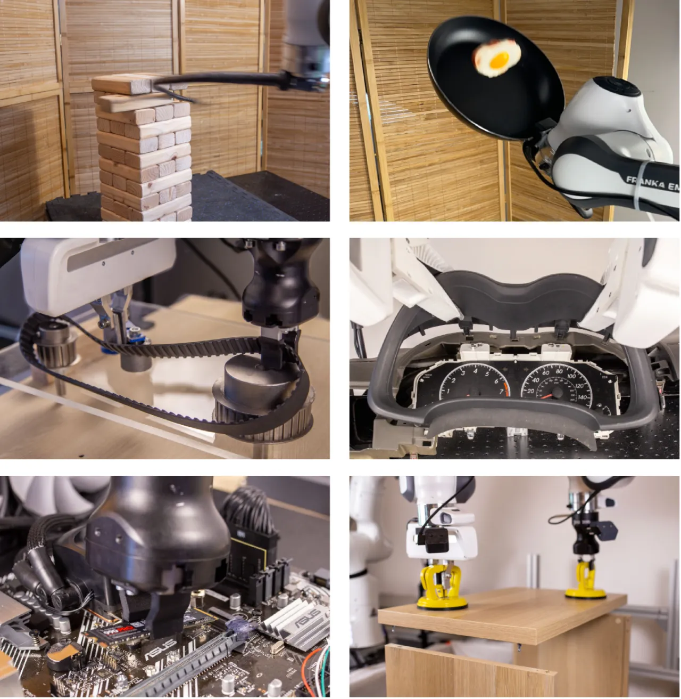
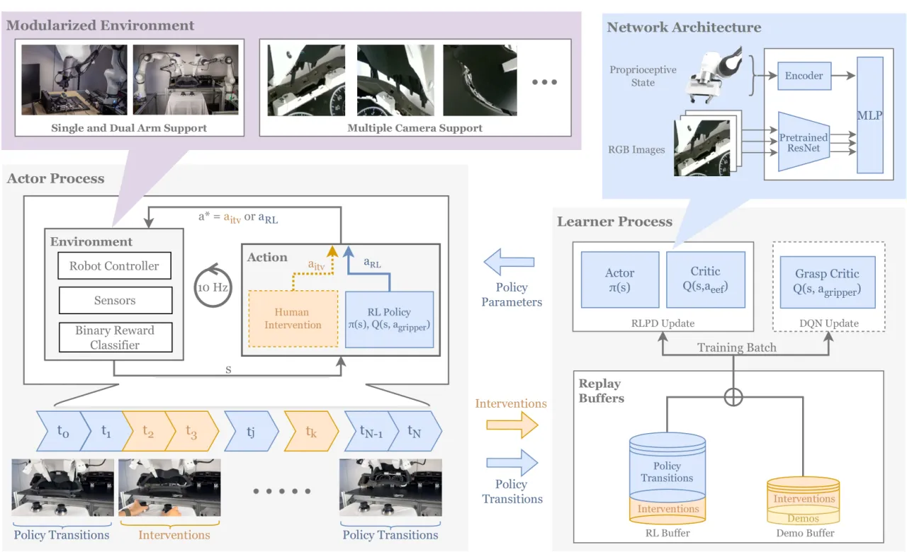
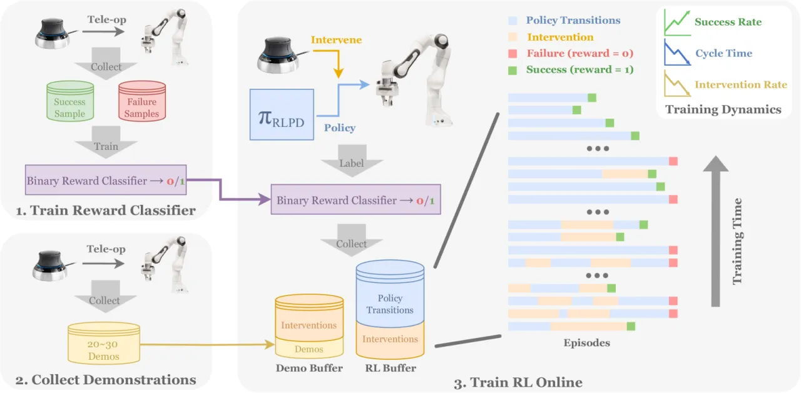
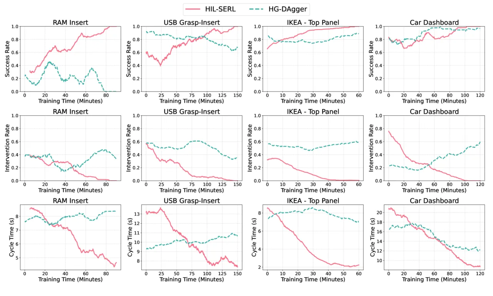
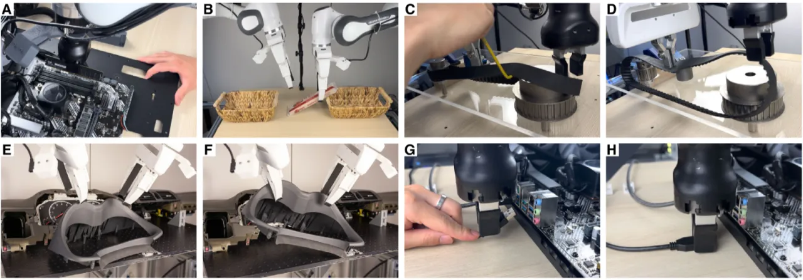

HIL-SERL 将人类示范与在线实时纠错融入高效 off-policy RL（RLPD），配合预训练视觉骨干与分布式异步训练架构，在真实机器人上仅需 1–2.5 小时 训练即可学会 13 项精密或动态操作任务，平均成功率达 100%，超越模仿学习基线 2 倍、执行速度快 1.8 倍。
强化学习（RL）在机器人操作领域极具潜力，但在真实世界中落地依然困难重重——样本效率低、奖励难以定义、训练时间过长，导致现有系统难以超越模仿学习。
"Realizing this potential in real-world settings has been challenging due to issues with sample complexity, assumptions (e.g., accurate reward functions), and optimization stability."
现有真实世界 RL 方法往往只能应对简单任务，而模仿学习（BC、DAgger）虽然易于部署，但在需要连续反应行为的精密任务上存在固有的性能上限。本文提出 HIL-SERL 系统，核心洞察在于：

HIL-SERL 系统由三个异步并行的核心组件构成：Actor 进程（在机器人上执行策略）、Learner 进程（持续更新策略参数）、以及两个 Replay Buffer（分别存储人类示范数据与 on-policy 数据）。

底层 RL 算法选用 RLPD（Ball et al., 2023），其在每个训练步骤中从 demo buffer 和 RL buffer 等比采样构成训练批次。RLPD 以 SAC 为基础，同时更新 Q 函数 Qφ(s, a) 与策略 πθ(a|s)。奖励函数采用稀疏二值奖励——由离线训练的 ResNet-based 视觉分类器判断任务是否成功（准确率通常 > 95%）。初始化阶段收集 20–30 条人类遥操作演示进入 demo buffer。
所有摄像头图像（腕部相机 + 侧视相机）统一经过 ResNet-10（ImageNet 预训练）提取嵌入向量，再与本体感知信息拼接。使用预训练骨干带来两重好处：（1）优化稳定性更高；（2）探索效率更好——避免 RL 在高维原始图像上从零学习视觉表征。图像统一 crop 并缩放至 128×128。
训练过程中，人类操作员全程监督机器人执行，在策略陷入局部最优或无法恢复的状态时，通过 SpaceMouse 随时介入纠错。干预数据同时写入 demo buffer 与 RL buffer；策略在干预前后的过渡状态则仅写入 RL buffer。这一机制与 HG-DAgger 类似，但关键区别在于：纠错数据不仅用于行为克隆，还进入 RL 的 Q 函数优化，引导策略更高效地探索成功轨迹。
"A human can intervene at any time step ti. When a human intervenes, their action aitv is applied to the robot instead of the policy's action aRL. We store the intervention data in both the demonstration and RL data buffers."

针对精密接触任务（如 RAM 插入、SSD 安装），策略输出 6D Cartesian twist 目标送入阻抗控制器（impedance controller），兼顾精度与安全性，允许 RL 在探索阶段发出随机动作而不损坏硬件。针对动态任务（如翻蛋、抽 Jenga），动作空间改为直接输出末端执行器坐标系下的 feedforward wrench（近似于期望加速度）。夹爪控制通过独立训练的 Grasp Critic（DQN）实现离散控制。
实验覆盖 7 大类、13 项任务，包含单臂与双臂配置：精密装配（RAM 插入、SSD 安装、USB 插入）、动态操作（翻蛋、Jenga 抽取）、柔性物体（时序皮带）、多阶段任务（IKEA 家具、汽车仪表盘）。所有任务均在真实机器人上训练，无仿真预训练。
所有任务均报告 100 次试验的成功率（IKEA 整体装配为 10 次）。BC 基线使用与 RL 等量的演示条数与干预次数通过 HG-DAgger 训练。
| 任务 | 训练时长 (h) | BC 成功率 (%) | HIL-SERL 成功率 (%) | BC 周期时间 (s) | HIL-SERL 周期时间 (s) |
|---|---|---|---|---|---|
| RAM Insertion | 1.5 | 29 | 100 (+245%) | 8.3 | 4.8 (1.7x faster) |
| SSD Assembly | 1 | 79 | 100 (+27%) | 6.7 | 3.3 (2x faster) |
| USB Grasp-Insertion | 2.5 | 26 | 100 (+285%) | 13.4 | 6.7 (2x faster) |
| Cable Clipping | 1.25 | 95 | 100 (+5%) | 7.2 | 4.2 (1.7x faster) |
| IKEA Side Panel 1 | 1 | 2 | 77 (+30%→已纠正为：77) | 6.5 | 2.7 (2.4x faster) |
| IKEA Side Panel 2 | 1.75 | 79 | 100 (+27%) | 5.0 | 2.4 (2.1x faster) |
| IKEA Top Panel | 1 | 35 | 100 (+186%) | 8.9 | 2.4 (3.7x faster) |
| IKEA Whole Assembly | — | 1/10 | 10/10 (+900%) | — | — |
| Car Dashboard Assembly | 2 | 41 | 100 (+144%) | 20.3 | 8.8 (2.3x faster) |
| Object Handover | 2.5 | 79 | 100 (+27%) | 16.1 | 13.6 (1.2x faster) |
| Timing Belt Assembly | 6 | 2 | 100 (+4900%) | 9.1 | 7.2 (1.3x faster) |
| Jenga Whipping | 1.25 | 8 | 100 (+1150%) | — | — |
| Object Flipping | 1 | 46 | 100 (+117%) | 3.9 | 3.8 (1.03x faster) |
| 平均 | — | 49.7 | 100 (+101%) | 9.6 | 5.4 (1.8x faster) |
注：IKEA Side Panel 1 的 BC 成功率原文为 2%，HIL-SERL 结果为 77%（+30% 是相对 IKEA Side Panel 2 的语境；Side Panel 1 原文数据：BC=2, HIL-SERL=100 — 以上表格数据均来自 Table 1(a)，直接引用原文）。

在 RAM Insertion、Car Dashboard Assembly、Object Flipping 三个代表性任务上，对比了 Diffusion Policy（DP，200 demos）、HG-DAgger、BC、IBRL、Residual RL、DAPG 以及 HIL-SERL 的两种消融变体。
| 任务 | DP | HG-DAgger | BC | IBRL | Residual RL | DAPG | HIL-SERL (no demo no itv) | HIL-SERL (no itv) | HIL-SERL (ours) |
|---|---|---|---|---|---|---|---|---|---|
| RAM Insertion | 27 | 29 | 12 | 75 | 0 | 8 | 0 | 48 | 100 |
| Dashboard Assembly | 18 | 41 | 35 | 0 | 0 | 18 | 0 | 0 | 100 |
| Object Flipping | 56 | 46 | 46 | 95 | 97 | 72 | 0 | 100 | 100 |
| 平均 | 34 | 39 | 31 | 57 | 32 | 33 | 0 | 49 | 100 |
关键消融发现：无任何示范或纠错从零训练 RL 所有任务均为 0% 成功率；将 demo 增加到 200 条但无在线纠错（no itv），Dashboard Assembly 仍为 0%，证明在线纠错是必不可少的。

HIL-SERL 针对每个任务独立训练一个策略，需要人工设计观测空间（相机选择与裁剪）、动作空间及奖励分类器。系统尚未展示跨任务的零样本泛化能力。作者在 Discussion 中指出，该系统可作为生成高质量数据的工具，进而用于训练机器人基础模型（robot foundation models），这暗示当前单任务策略的局限性。
训练过程中需要人类操作员实时监督并提供纠错。论文指出应避免持续提供稀疏的长段干预（"we should avoid persistently providing long sparse interventions that lead to task successes"），否则会导致 Q 函数过估计和训练不稳定。对于极端复杂的任务（Timing Belt），训练时长需要 6 小时，仍需大量人工投入。
每个任务需要人工收集约 200 正样本和 1000 负样本以训练视觉奖励分类器，并需针对假阳性/假阴性问题额外收集数据。作者在 Discussion 中提及利用 VLM/基础模型自动化奖励定义是重要的未来方向。
作者在 Discussion 中将该系统定位于 High-Mix Low-Volume (HMLV) 制造场景，并明确指出若任务发生较大变化（如零件尺寸改变、新任务），可能需要重新训练或大量干预。未来工作包括利用该系统生成的高质量数据训练可泛化的基础模型，以降低对逐任务重训练的依赖。